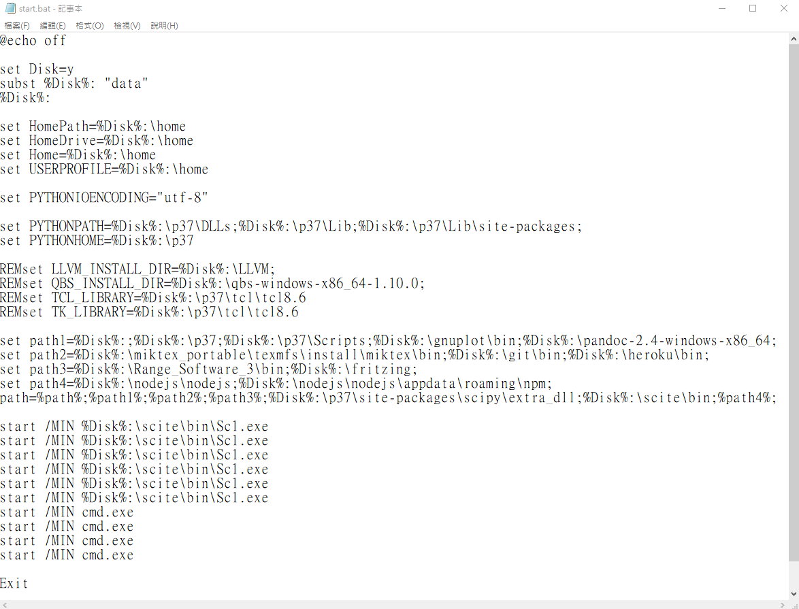
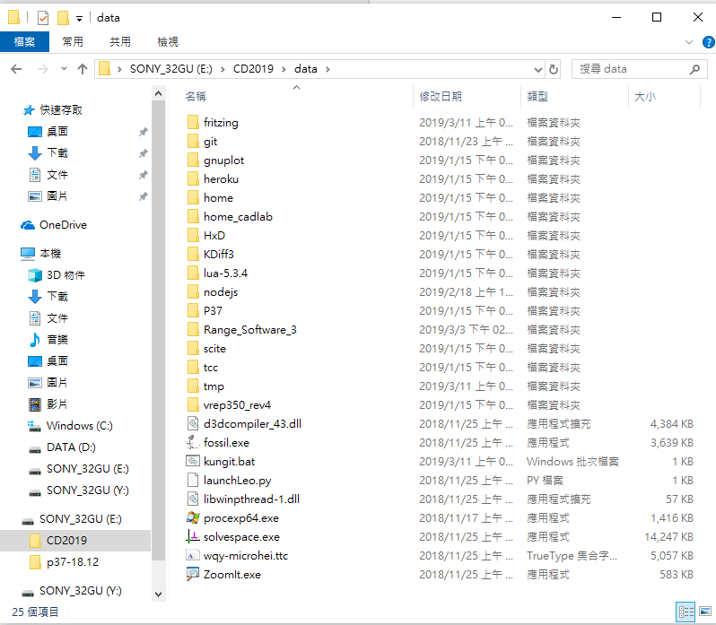

Task-1 << Previous Next >> 隨機分組介面成品
Task-1 << Previous Next >> 隨機分組介面成品
自定義隨身系統
除了老師所提到的幾個重要的程式外，我們還加入老師提起的Range_Software3的分析軟體以及自己會用到的電路圖繪製軟體Fritzing

都解壓縮完並設定好start批次檔時長這樣

Range_Software3
是個結合了許多分析又可以繪圖的軟體，但對於操作完全不熟悉

Fritzing
官網---下載-Windows x64 Version------0.9.3b was released on June 2, 2016.
我們會選擇此軟體的原因
其一 : 電路學上課時老師推薦過
其二 : 此程式可以編譯至可攜系統中
其三 : 包含了許多大廠的板子且可用code編譯
其四:可調成中文

介紹影片
周政叡-40423218 影片
陳柏維-40423136 影片(雜音偏多
許育誠-40423160 影片
吳隆廷-40623115 影片
陳鉅忠-40623130 影片(聲音偏小
蕭家翰-40623133 影片
許高惟-40623139 影片
郭益綸-40623142 影片
林暉恩-40623145 影片
劉 奇 -40623146 影片
Task-1 << Previous Next >> 隨機分組介面成品